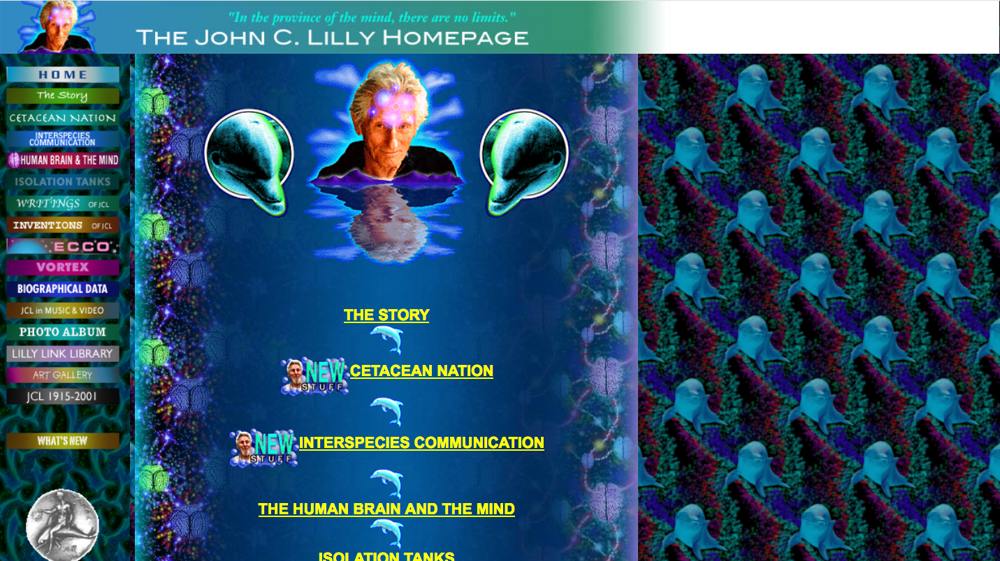
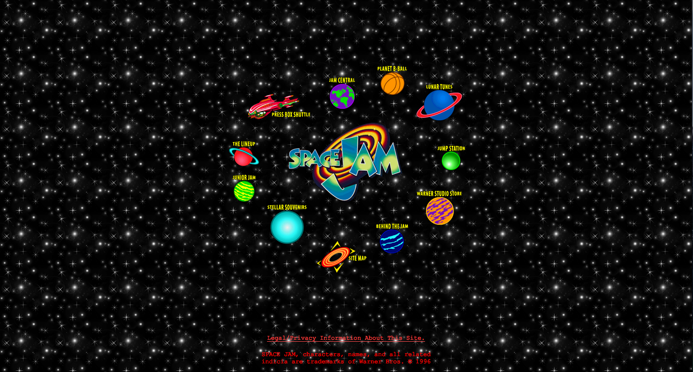
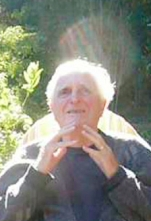

When I was a teen I loved two things: American folk traditions and Punk Rock. I discovered both at my local library. For Folk, it was through through Foxfire, an anthology of Appalachian traditions collected by students in the 70's. For Punk, it came from Our Band Could Be Your Life. I would check out a mass of books, then read about canning fruit and SoCal Punks and how to build banjos and Butthole Surfer Tour stories and it all excited me so so much. I fell in love with folk and punk for the same reason-- they showed cool things people do, and had been doing for a while, and then gave clear instructions on how I could do them too.
In my head, there was a clear connection between the diy punk movement of the 80's and the folk revival of the 60's and 70's. Punk culture was all about doing things yourself, which meant you had to learn how things were done in the first place. For example, if you want to tell people about your favorite bands and find other music fans, then you might make a zine. And in the act of making zines, you were led to learn about traditional printing, type design, layout techniques, and more. Learning about older skills gave you tools for your modern passion. Similarly, for folk-hippies in the 60's dreaming up societies based on love, there was value in learning the techniques of earlier, simpler societies. These techniques could be used to run their communes, or at least to help fire up the visions for them.
Both the punks and the hippies created their own alternative network of publishing, distribution, touring, and fans--and they did this in part by idolizing, then learning from, the past.
These days, I've gotten super into website building. I am teaching myself HTML so that I can make websites about ghost stories or comedy shows or things I ate that day. I am not sure why I was drawn to this. I simply wanted a creative outlet that felt pure and new, and basic web design was that outlet. I don't want the sites to look clean and professional. I don't want a website builders' marks on them. The more my sites look handmade (with my clumsy dumb hands), the happier I am.
This desire seems to be part of a larger trend. You can see it in the Web Brutalism design movement, or the"post-facebook" communities like tilde.town or tilde.club. You can see it in the popularity of tinyletter, which brings back the thrill of both email and family newsletters. Last week a friend asked if I could help him build a personal site for his comedy videos and when I asked what sort of aesthetic he wanted, he sent me the wikipedia article for "Cyberspace" and this tribute page to John C. Lilly.
He was basically wanting a full mid-90's Geocities page, without any sort of irony, and I understood completely.
I know I have a tendency to classify anything I love as "Punk", in the same way a child calls any tall, nice-smelling presence "Mom", BUT! I feel like homemade websites are a type of Punk. And I know it feels premature to say that basic HTML competency is a type of folk craft, but I'm not sure what else to call it.
How does something become a folk tradition? Is it the age of the practice, or how many (or few) people practice it? Folk revivalists in the 60's were idolizing artists from the depression era, which happened just 30 years prior. The world wide web is nearly 30 years old, and the internet itself over 60. There are people leading internet companies today who are far younger than the web, who never knew a world without the internet. If a teen is drawn to early web aesthetics, it is not out of a nostalgia for their youth. It is, instead, a yearning for a time from before they even existed, a time they can only imagine. That seems hella old to me, and hella folksy.
I think we are drawn to the aesthetics of the early web because it feels authentic and human, like a chair made by hand or a band playing only for the love of it. And if our modern lives are defined by the omnipresence of the internet, then idolizing Geocities pages could be seen as a way of connecting to our roots. So building a website from scratch, with hard-coded gif animations and a web-ring, is now part of the back-to-the-land tradition.
Describing handmade websites as part of a diy/folk tradition is not just an exercise in wordplay, or a way to say "man, can you believe how old we all are?". I do it because I think it could be a useful alternative to Facebook and the fatigue of the mainstream world.
The majority of our internet usage is on social media sites like Facebook and Twitter. If we are not scrolling through them, we are using them as a beginning channel to guide us to the rest of the internet. But these sites are not neutral platforms. They have their own agendas, and these agendas don't have the users best interests at heart. We all know this, we all know that Facebook is evil and that we are the products and twitter is toxic and on and on. But we feel there's no real alternative, and you feel lonely and weird if you're not on these sites, so you just suck it up and deal with it. Facebook is awful but it's good for learning about events, we say. Or we tell each other that if we want to have a good day, then stay off the internet and it's hordes of trolls, not realizing that by "the internet" we really just mean twitter and instagram.
My point is that the mainstream is no longer defined by cultural touchstones, it is defined by platforms. Regardless of your feed, scrolling through twitter because you may find a funny sentence or interesting recommendation is not that different from watching hours of TV hoping for that one good commercial. The only real difference is that no one watches TV anymore.
So when we get tired of this mainstream world of competitive likes, shallow "content", and time-sucking consumption, we decide to try going offline. We "step away" from the internet, deactivate our Facebook account, go outside to eat an apple and stare at a squirrel and say aloud to no one how much better this life is. But this never lasts, because it is unreasonable today to try to live without the internet. It is like deciding to live without running water: it's possible, but extreme, and makes all other aspects of modern life harder.
My dream is for people to drop out from these major websites, but stay online. Keep the urge for connection and sharing that makes social media so appealing, but satisfy the urge in individual, unique, wonderful ways. I want people to maintain personal sites in the same way they wrote zines. I want people to share homemade music through homemade social networks, and to create both just for the pure love of it. I want our personalities to come through not just in the words or links we share, but in the URLS we use and the code we write. I dream of regional communities forming online, based around organically grown web rings, and for idiosyncrasies to form in the aesthetics of our sites based on the communities we learned to code from. Basically, to bring back all the things that made the early internet so exciting and open and welcoming. It's a little bit harder, but that's part of the charm. It means the connections you make are intentional, and everything you create and share online will always be yours, because you made everything yourself.
The folk practices of our nerdy grandparents, the people who designed and defined the world wide web, are the tools we can use realize this world. I am so excited to learn and practice them.
Dear reader, if you are also building simple sites from scratch, I'd love to hear from you and learn from you! And if you don't know HTML at all, but it seems cool, well then let me tell you: It is cool, people have been doing cool stuff with it for years, and you can do it too.